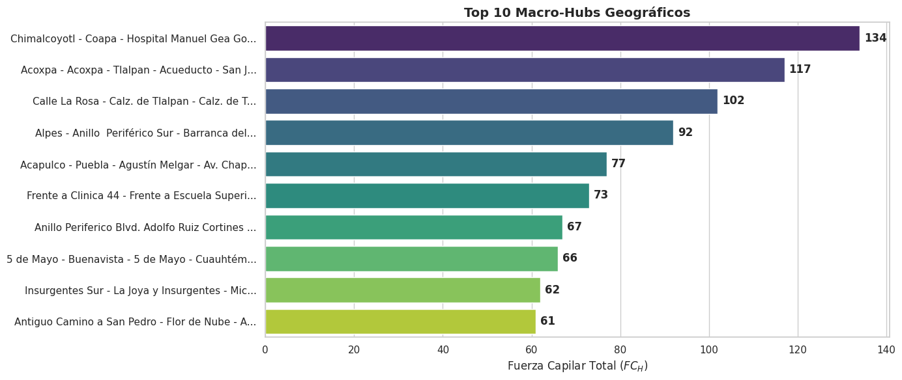
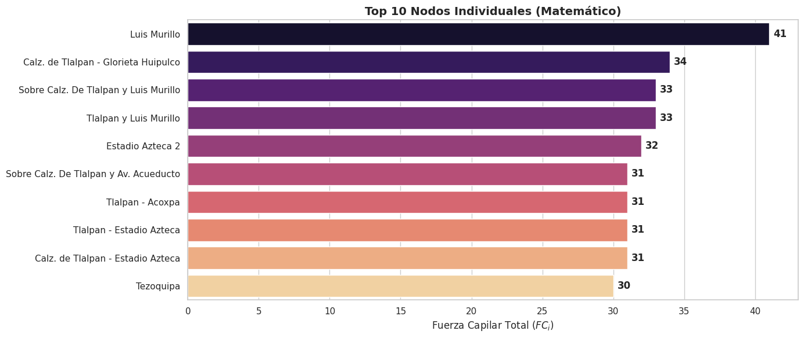
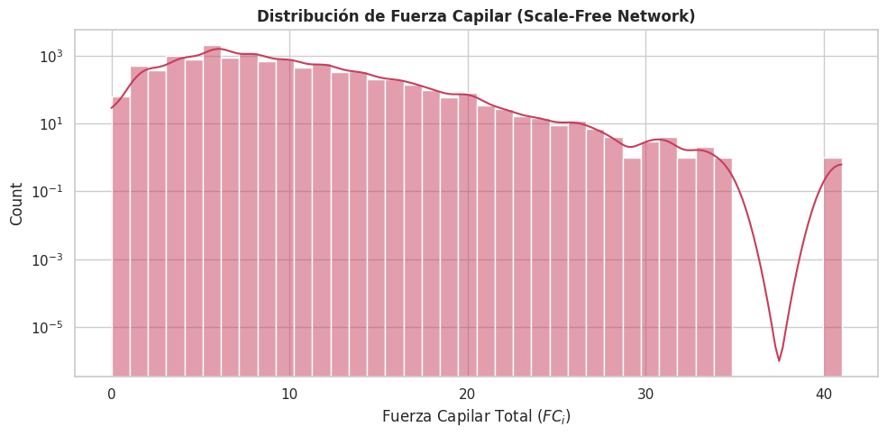
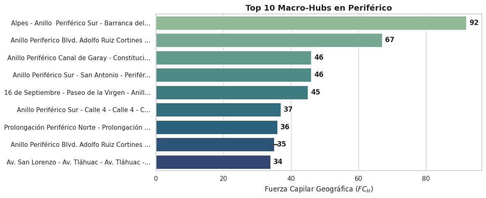
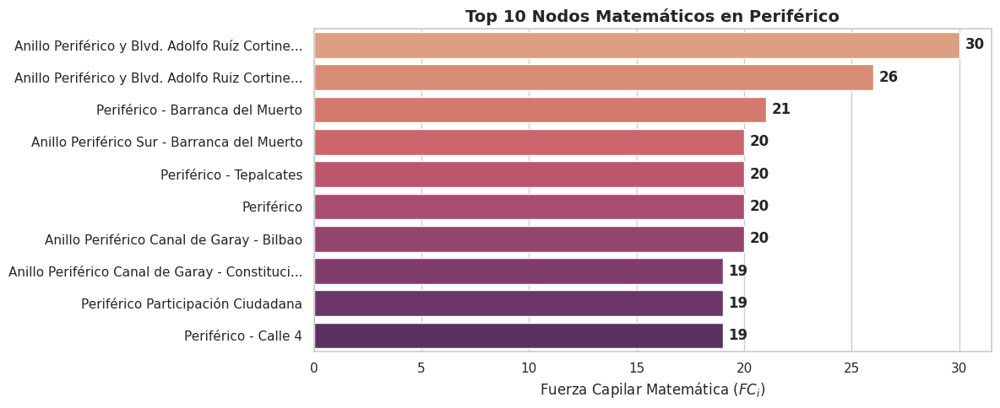

Reporte 03: Fuerza Capilar (Grado Nodal) y Nodos de Transferencia Intermodal ($FC$)#
1. Justificación Teórica#
El presente indicador evalúa la Fuerza Capilar de la red de transporte, definida topológicamente como el grado nodal ($k$) de cada estación. Este indicador cuantifica el nivel de convergencia de flujos y la capacidad de un nodo para actuar como punto de transferencia intermodal.
Para obtener una radiografía urbana realista y mitigar la inflación geométrica, el modelo divide la Fuerza Capilar en dos dimensiones analíticas:
A. Fuerza Capilar Geográfica (Macro-Hubs): Agrupa topológicamente estaciones físicamente colindantes (radio de tolerancia de 100m) en un subgrafo $H$. Consolida los flujos de sus estaciones constituyentes eliminando las duplicidades. Representa el fenómeno urbano del transbordo físico (ej. CETRAMs):
$$FC_{H} = \sum_{j \in H} \left( k_{in}(j) + k_{out}(j) \right) - \text{Aristas Internas}$$
B. Fuerza Capilar Matemática / Estricta (Por Estación Individual): Calcula el grado de entrada y salida de un nodo topológico $i$, aplicando un filtro de frontera espacial (radio de 25m) para capturar únicamente los vectores de flujo. Representa la centralidad pura del nodo en el grafo:
$$FC_i = k_{in}(i){frontera} + k{out}(i)_{frontera}$$
# ==========================================
# 2. Inicialización del Entorno y Librerías
# ==========================================
%load_ext autoreload
%autoreload 2
%matplotlib inline
import sys
import os
import re
import ast
import folium
import warnings
import pandas as pd
import matplotlib.pyplot as plt
import seaborn as sns
from IPython.display import display
# Silenciar advertencias futuras para un reporte limpio
warnings.filterwarnings('ignore', category=FutureWarning)
# Asegurar que Jupyter encuentra la carpeta raíz del proyecto
proyecto_path = os.path.abspath('..')
if proyecto_path not in sys.path:
sys.path.append(proyecto_path)
from src.infrastructure.go_client.client import fetch_full_network
from src.api.schemas.schemas import GeoJSONTransportSchema
from src.core.services.graph_builder import VFTGraphBuilder
from src.core.algorithms.topologicalIndicators.capillar_strength import CapillaryStrengthAnalyzer
sns.set_theme(style="whitegrid")
plt.rcParams['figure.figsize'] = (12, 6)
plt.rcParams['font.family'] = 'sans-serif'
# ==========================================
# 3. Descarga de Red y Construcción del Grafo
# ==========================================
print("📥 Descargando red de transporte...")
raw_data = await fetch_full_network()
print("⚙️ Construyendo Grafo Dirigido VFT...")
validated_payload = GeoJSONTransportSchema(**raw_data)
plt.ioff()
GRAF= VFTGraphBuilder(validated_payload)
G = GRAF.build_graph()
plt.close('all')
plt.ion()
print(f"✅ Grafo construido: {G.number_of_nodes()} nodos topológicos.")
📥 Descargando red de transporte...
2026-04-18 22:26:12 | INFO | VFT_Model | Construyendo el puente hacia el módulo espacial de Go...
2026-04-18 22:26:12 | INFO | VFT_Model | Solicitando capa espacial a: http://localhost:8080/movilidad/mapas/geojsonEstacion
2026-04-18 22:26:12 | INFO | VFT_Model | Solicitando capa espacial a: http://localhost:8080/movilidad/mapas/geojsonLinea
2026-04-18 22:26:13 | INFO | VFT_Model | Red extraída: 22766 entidades espaciales listas para VFT.
⚙️ Construyendo Grafo Dirigido VFT...
2026-04-18 22:26:13 | INFO | VFT_Model | Iniciando VFTGraphBuilder en modo: REALISTIC_INTEGRATION
2026-04-18 22:26:13 | INFO | VFT_Model | Fase 1 y 2: Extrayendo nodos y trazos base...
2026-04-18 22:26:15 | INFO | VFT_Model | Fase 2 completada: 65220 aristas interestación creadas.
2026-04-18 22:26:15 | INFO | VFT_Model | Grafo Base construido: 11115 Nodos y 32344 Segmentos.
2026-04-18 22:26:15 | WARNING | VFT_Model | Eliminadas 1562 aristas phantom (distancia > 5 km). Causa probable: geometría MultiLineString fragmentada en el backend.
2026-04-18 22:26:15 | INFO | VFT_Model | Fase 3: Integrando sistemas (Tolerancia peatonal: 85.0m)...
2026-04-18 22:26:42 | INFO | VFT_Model | Se crearon 20482 aristas de Transbordo Peatonal.
2026-04-18 22:26:42 | INFO | VFT_Model | Aplicando Motor de Impedancia...
2026-04-18 22:26:42 | INFO | VFT_Model | Iniciando inyección de motor de impendancia sobre VFT:
2026-04-18 22:26:42 | INFO | VFT_Model | Impedancia aplicada exitosamente a 25197 segmentos.
2026-04-18 22:26:42 | INFO | VFT_Model | Grafo final: 11115 nodos, 45679 aristas.
✅ Grafo construido: 11115 nodos topológicos.
4. Ejecución del Motor Topológico#
A continuación, instanciamos el analizador sobre el grafo dirigido (G) y calculamos ambos escenarios de fuerza capilar.
# ==========================================
# 4. Cálculo de Indicadores Capilares
# ==========================================
from src.core.algorithms.topologicalIndicators.capillar_strength import CapillaryStrengthAnalyzer
analizador_topologico = CapillaryStrengthAnalyzer(G)
# Estos dos DataFrames alimentarán TODO el resto del notebook
df_estricto = analizador_topologico.calculate_capillary_strength(snap_tolerance_m=25.0)
df_macro_hubs = analizador_topologico.calculate_geo_capillary_strength(tolerance_m=100.0, snap_tolerance_m=25.0)
print(f"📊 Nodos individuales procesados: {len(df_estricto)}")
print(f"📊 Macro-Hubs consolidados: {len(df_macro_hubs)}")
📊 Nodos individuales procesados: 11115
📊 Macro-Hubs consolidados: 4700
## 5. Análisis Geográfico: Macro-Hubs Intermodales Este enfoque revela la infraestructura física de transbordo. Al agrupar estaciones cercanas, emergen los grandes polígonos de movilidad de la ciudad.
# --- Gráfica de Barras ---
top_10_hubs = df_macro_hubs.head(10).copy()
top_10_hubs['Macro_Hub_Corto'] = top_10_hubs['Macro_Hub'].apply(lambda x: x[:45] + '...' if len(x) > 45 else x)
fig, ax = plt.subplots(figsize=(14, 6))
sns.barplot(
data=top_10_hubs,
x='Fuerza_Capilar_Total',
y='Macro_Hub_Corto',
palette='viridis',
ax=ax
)
ax.set_title('Top 10 Macro-Hubs Geográficos', fontsize=14, fontweight='bold')
ax.set_xlabel('Fuerza Capilar Total ($FC_H$)')
ax.set_ylabel('')
for i in ax.containers:
ax.bar_label(i, padding=5, fontweight='bold')
# 5. Ajustar y forzar el renderizado en Jupyter
plt.tight_layout()
display(fig)
plt.close(fig)

# --- Mapa Interactivo ---
mapa_geo = folium.Map(location=[19.4326, -99.1332], zoom_start=11, tiles="CartoDB positron")
# Para mapear los Hubs, buscamos sus estaciones constituyentes en el df_estricto
for _, hub in top_10_hubs.iterrows():
nodos_hub = df_estricto[df_estricto['Estacion'].apply(lambda x: x in hub['Macro_Hub'])]
for _, nodo in nodos_hub.iterrows():
try:
lon, lat = ast.literal_eval(nodo['Nodo_ID'])
folium.CircleMarker(
location=(lat, lon), radius=max(hub['Fuerza_Capilar_Total']*0.1, 5),
color="#2A7686", fill=True, fill_color="#2A7686", fill_opacity=0.6,
popup=f"<b>Macro-Hub:</b> {hub['Macro_Hub_Corto']}<br><b>FC Geográfica:</b> {hub['Fuerza_Capilar_Total']}"
).add_to(mapa_geo)
except: pass
display(mapa_geo)
## 6. Análisis Matemático: Centralidad Estricta Evalúa la convergencia puntual sin agrupaciones, detectando puntos específicos (coordenadas únicas) que soportan una gran carga de vectores vehiculares.
# --- Gráfica de Barras ---
top_10_nodos = df_estricto.head(10).copy()
top_10_nodos['Estacion_Corta'] = top_10_nodos['Estacion'].apply(
lambda x: x[:45] + '...' if len(x) > 45 else x
)
fig, ax = plt.subplots(figsize=(14, 6))
sns.barplot(
data=top_10_nodos,
x='Fuerza_Capilar_Total',
y='Estacion_Corta',
palette='magma',
ax=ax
)
ax.set_title('Top 10 Nodos Individuales (Matemático)', fontsize=14, fontweight='bold')
ax.set_xlabel('Fuerza Capilar Total ($FC_i$)')
ax.set_ylabel('')
for i in ax.containers:
ax.bar_label(i, padding=5, fontweight='bold')
plt.tight_layout()
display(fig)
plt.close(fig)

# --- Mapa Interactivo ---
mapa_math = folium.Map(location=[19.4326, -99.1332], zoom_start=11, tiles="CartoDB positron")
for _, row in top_10_nodos.iterrows():
try:
lon, lat = ast.literal_eval(row['Nodo_ID'])
folium.CircleMarker(
location=(lat, lon), radius=max(row['Fuerza_Capilar_Total']*0.2, 5),
color="#C73E5C", fill=True, fill_color="#C73E5C", fill_opacity=0.7,
popup=f"<b>Nodo:</b> {row['Estacion']}<br><b>FC Matemática:</b> {row['Fuerza_Capilar_Total']}"
).add_to(mapa_math)
except: pass
display(mapa_math)
### 6.1. Distribución de la Capilaridad Matemática (Ley de Potencias) La topología de la red sigue una distribución de **Scale-Free Network** (Ley de Potencias). ¿Por qué ocurre esto? En los sistemas de transporte reales, la inmensa mayoría de las paradas actúan como nodos de paso simples (1 conexión de entrada y 1 de salida = FC de 2). Por el contrario, un grupo extremadamente reducido de nodos actúa como absorbedores masivos de rutas (decenas de conexiones). Esta desigualdad genera la curva logarítmica descendente que vemos a continuación.
fig, ax = plt.subplots(figsize=(10, 5))
sns.histplot(
df_estricto['Fuerza_Capilar_Total'],
bins=40,
kde=True,
color='#C73E5C',
ax=ax
)
ax.set_title('Distribución de Fuerza Capilar (Scale-Free Network)', fontweight='bold')
ax.set_xlabel('Fuerza Capilar Total ($FC_i$)')
ax.set_yscale('log')
plt.tight_layout()
display(fig)
plt.close(fig)

# --- Tabla Demostrativa del Fenómeno ---
print("Ejemplo de la polarización en la red:")
df_ejemplo = pd.concat([df_estricto.head(2), df_estricto[df_estricto['Fuerza_Capilar_Total'] == 2].tail(2)])
display(df_ejemplo[['Estacion', 'Sistemas_Integrados', 'Fuerza_Capilar_Total']])
Ejemplo de la polarización en la red:
| Estacion | Sistemas_Integrados | Fuerza_Capilar_Total | |
|---|---|---|---|
| 7270 | Luis Murillo | [RTP] | 41 |
| 2817 | Calz. de Tlalpan - Glorieta Huipulco | [RTP] | 34 |
| 5914 | Frente expo banamex | [RTP] | 2 |
| 5960 | Fuentes Brotantes - La Bomba | [CC] | 2 |
## 7. Anexo: Diagnóstico Especulativo para Ruta Anillar (Periférico) Este apartado aísla los nodos y Macro-Hubs que cruzan o se nombran "Periférico". Se divide en la perspectiva Matemática y Geográfica para identificar anclajes potenciales.
# Expresión regular para atrapar variantes de la palabra
patron = re.compile(r'perif[eé]rico', re.IGNORECASE)
df_peri_math = df_estricto[df_estricto['Estacion'].str.contains(patron, na=False)].sort_values(by='Fuerza_Capilar_Total', ascending=False)
df_peri_geo = df_macro_hubs[df_macro_hubs['Macro_Hub'].str.contains(patron, na=False)].sort_values(by='Fuerza_Capilar_Total', ascending=False)
7.1. Eje Periférico: Perspectiva Geográfica (Macro-Hubs)#
Muestra los polígonos de transferencia más fuertes a lo largo de la vialidad.
print("Ejemplo de Estaciones Periféricas en la Red Geográfica:")
df_peri_geo.head(5)
Ejemplo de Estaciones Periféricas en la Red Geográfica:
| Macro_Hub | Sistemas_Integrados | Detalle_Estaciones | Estaciones_Agrupadas | Conexiones_Entrada | Conexiones_Salida | Fuerza_Capilar_Total | |
|---|---|---|---|---|---|---|---|
| 259 | Alpes - Anillo Periférico Sur - Barranca del ... | [CC, RTP] | {'CC': ['Alpes', 'Av. Revolucion', 'Barranca d... | 21 | 50 | 42 | 92 |
| 374 | Anillo Periferico Blvd. Adolfo Ruiz Cortines -... | [CC, RTP] | {'CC': ['Periferico - Av. Pedregal', 'Periféri... | 18 | 34 | 33 | 67 |
| 402 | Anillo Periférico Canal de Garay - Constitució... | [CC, MB, RTP] | {'RTP': ['Anillo Periférico Canal de Garay - C... | 8 | 20 | 26 | 46 |
| 453 | Anillo Periférico Sur - San Antonio - Periféri... | [CC, RTP] | {'CC': ['Periférico - San Antonio', 'Periféric... | 7 | 23 | 23 | 46 |
| 29 | 16 de Septiembre - Paseo de la Virgen - Anillo... | [CC, RTP, TL] | {'CC': ['Calz. México - Xochimilco - Paseo de ... | 14 | 23 | 22 | 45 |
# --- Datos ---
top_peri_geo = df_peri_geo.head(10).copy()
top_peri_geo['Macro_Hub_Corto'] = top_peri_geo['Macro_Hub'].apply(
lambda x: x[:45] + '...' if len(x) > 45 else x
)
fig, ax = plt.subplots(figsize=(12, 5))
sns.barplot(
data=top_peri_geo,
x='Fuerza_Capilar_Total',
y='Macro_Hub_Corto',
palette='crest',
ax=ax
)
ax.set_title('Top 10 Macro-Hubs en Periférico', fontsize=14, fontweight='bold')
ax.set_xlabel('Fuerza Capilar Geográfica ($FC_H$)')
ax.set_ylabel('')
for i in ax.containers:
ax.bar_label(i, padding=5, fontweight='bold')
plt.tight_layout()
display(fig)
plt.close(fig)

# Mapa
mapa_peri_geo = folium.Map(location=[19.3500, -99.1900], zoom_start=11, tiles="CartoDB positron")
for _, hub in top_peri_geo.iterrows():
nodos_hub = df_estricto[df_estricto['Estacion'].apply(lambda x: x in hub['Macro_Hub'])]
for _, nodo in nodos_hub.iterrows():
try:
lon, lat = ast.literal_eval(nodo['Nodo_ID'])
folium.CircleMarker(
location=(lat, lon), radius=max(hub['Fuerza_Capilar_Total']*0.2, 6),
color="#1B4F72", fill=True, fill_opacity=0.7, popup=f"Hub: {hub['Macro_Hub_Corto']}"
).add_to(mapa_peri_geo)
except: pass
display(mapa_peri_geo)
7.2. Eje Periférico: Perspectiva Matemática (Nodos Individuales)#
Muestra las coordenadas exactas de mayor tensión vehicular intermodal sobre el anillo.
df_peri_math.head(5)
| Nodo_ID | Estacion | Sistemas_Integrados | Detalle_Estaciones | Estaciones_Agrupadas | Conexiones_Entrada | Conexiones_Salida | Fuerza_Capilar_Total | |
|---|---|---|---|---|---|---|---|---|
| 707 | (-99.15562, 19.29488) | Anillo Periférico y Blvd. Adolfo Ruíz Cortines | [RTP] | {'RTP': ['Anillo Periférico y Blvd. Adolfo Ruí... | 1 | 14 | 16 | 30 |
| 706 | (-99.15515, 19.29557) | Anillo Periférico y Blvd. Adolfo Ruiz Cortines | [RTP] | {'RTP': ['Anillo Periférico y Blvd. Adolfo Rui... | 1 | 13 | 13 | 26 |
| 8538 | (-99.19147, 19.36391) | Periférico - Barranca del Muerto | [CC] | {'CC': ['Periférico - Barranca del Muerto']} | 1 | 12 | 9 | 21 |
| 689 | (-99.19144, 19.36385) | Anillo Periférico Sur - Barranca del Muerto | [RTP] | {'RTP': ['Anillo Periférico Sur - Barranca del... | 1 | 10 | 10 | 20 |
| 8682 | (-99.0597, 19.38916) | Periférico - Tepalcates | [CC] | {'CC': ['Periférico - Tepalcates']} | 1 | 8 | 12 | 20 |
# --- Datos ---
top_peri_math = df_peri_math.head(10).copy()
top_peri_math['Estacion_Corta'] = top_peri_math['Estacion'].apply(
lambda x: x[:45] + '...' if len(x) > 45 else x
)
fig, ax = plt.subplots(figsize=(12, 5))
sns.barplot(
data=top_peri_math,
x='Fuerza_Capilar_Total',
y='Estacion_Corta',
palette='flare',
ax=ax
)
ax.set_title('Top 10 Nodos Matemáticos en Periférico', fontsize=14, fontweight='bold')
ax.set_xlabel('Fuerza Capilar Matemática ($FC_i$)')
ax.set_ylabel('')
for i in ax.containers:
ax.bar_label(i, padding=5, fontweight='bold')
plt.tight_layout()
display(fig)
plt.close(fig)

# Mapa
mapa_peri_math = folium.Map(location=[19.3500, -99.1900], zoom_start=11, tiles="CartoDB positron")
for _, row in top_peri_math.iterrows():
try:
lon, lat = ast.literal_eval(row['Nodo_ID'])
folium.CircleMarker(
location=(lat, lon), radius=max(row['Fuerza_Capilar_Total']*0.3, 6),
color="#E67E22", fill=True, fill_opacity=0.8, popup=f"Nodo: {row['Estacion_Corta']}"
).add_to(mapa_peri_math)
except: pass
display(mapa_peri_math)
**Nota Aclaratoria:** *Los mapas mostrados en la Sección 7 representan únicamente una evaluación de la infraestructura preexistente. Aún no se traza ni se mapea el recorrido geométrico propuesto para el "Corredor Anillar", por lo que esta sección se mantiene en un plano puramente especulativo para identificar los puntos naturales de anclaje de la futura línea.*